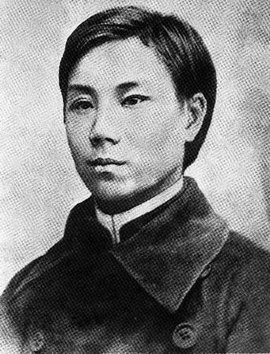

|
邹容(1885年-1905年)本籍人 |
|  |
邹容，重庆府巴县（今重庆市渝中区）人，中国近代著名资产阶级革命宣传家，投身民主革命，是在中国近代史上第一个写下篇章的重庆人。邹容（1885年—1905年），中国近代著名资产阶级革命宣传家，原名桂文，又名威丹、蔚丹、绍陶，留学日本时改名邹容。四川巴县人（今重庆市），出生在一个商业资本家家庭。应巴县童子试，因愤于考题生僻而罢考，从此厌恶科举八股。从父命入重庆经书书院，因蔑视旧学而被开除。后逐渐向往维新变法。光绪二十七年（1901年），赴成都投考留日官费生，因思想倾向维新，临行时被取消资格，遂决计自费赴日留学。光绪二十八年（1902年）秋，到达东京，入同文书院。始撰《革命军》初稿。 |